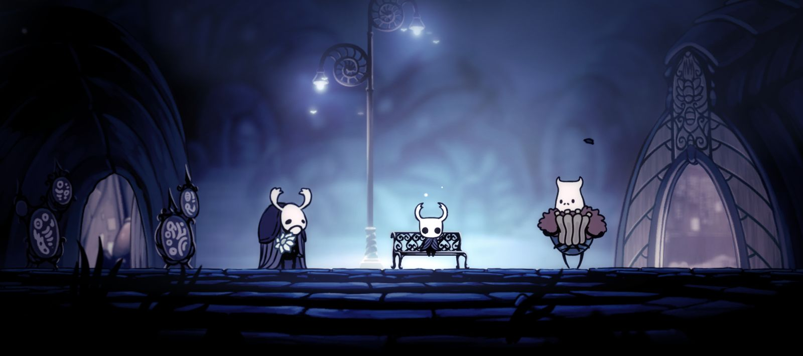

Fleatopia Bench

Colour Themes
Select a colour to copy its hex code.
The palette is built around the warm amber and gold of the cauldron, the roasting fire and the strings of lights, set against the deep navy of the cavern. It is one of the warmest, most welcoming colour schemes in Pharloom.
About
Fleatopia is the final home of the Flea Caravan: a festival town built beside the clear waters of the Pale Lake, at the eastern edge of the Putrified Ducts. The bench sits at the heart of the town, surrounded by sleepy fleas, a glowing cauldron and a roasting spit, all lit by strings of little lanterns. It is a place to rest, refill and enjoy the company of the fleas Hornet has rescued across Pharloom.
Location
Fleatopia is in the far east of the Putrified Ducts, on the shore of the Pale Lake. The Ducts are reached through a hidden passage in the ceiling of the Memorium's map room, or from the top of Bilewater. The town and its bench only appear once Hornet has rescued at least 22 lost fleas and told Fleamaster Mooshka about the Pale Lake.
Hollow Knight

Characters
Fleamaster Mooshka leads the town and, in Act 3, hosts the Festival of the Flea. Grishkin keeps the Flea Brew cauldron going, and Vog, the flea tracker found high in the Ducts, settles here with the rest of the Caravan. After his defeat in Shellwood, Shrine Guardian Seth eventually accepts the fleas' invitation and competes in their games.
Connections
The Putrified Ducts link to the Memorium above and Bilewater below, and both the Ducts and Bilewater were poisoned by waste and smog from the Citadel. Fleatopia is tied to two wishes: Ecstasy of the End, where Hornet must set the high score in every flea game to earn Pale Oil, and Fleatopia Supplies, a delivery for Mooshka. Beating Seth in all three games also earns the Guardian's Memento.
Art Direction
Fleatopia is a pocket of warmth in one of Pharloom's filthiest areas. Where the rest of the Putrified Ducts is murky and polluted, this scene glows with orange firelight and strings of tiny lights, so it reads instantly as a safe place to rest. The round, fluffy fleas are drawn with soft shapes and sleepy faces that contrast with the slimy enemies outside, and the festival decorations show a town choosing to celebrate even as the world ends.